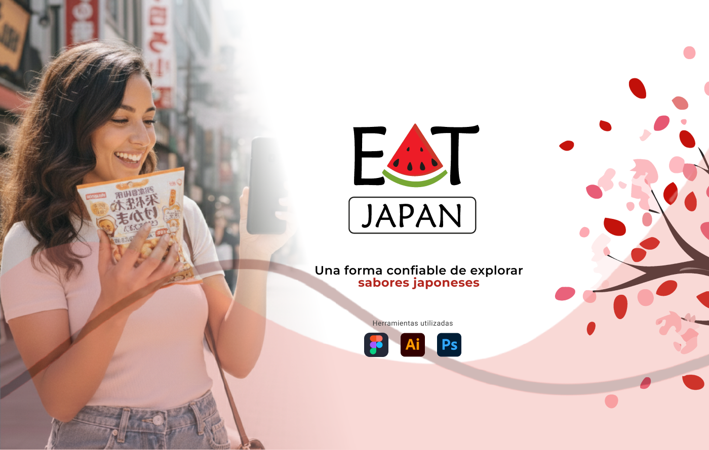

Diseño UX/UI especializada en Business Intelligence.
Diseñadora UX/UI especialista en estrategia, empatía y diseño de sistemas para ayudar a escalar negocios y potenciar el bienestar de los usuarios.
Estrategia, Datos y Experiencia
Transformo la complejidad de los datos en experiencias intuitivas. Conecto los objetivos de negocio en entornos de Business Intelligence con las necesidades de los usuarios mediante procesos de diseño que priorizan la claridad y la escalabilidad.
UX Research
para transformar datos técnicos en hallazgos accionables y soluciones centradas en las personas.
Diseño UX/UI
Diseño interfaces funcionales que optimizan la visualización de información y facilitan la toma de decisiones estratégicas.
Design System
Construyo librerías de componentes escalables que agilizan el desarrollo y aseguran la coherencia visual en todo el producto.
Proyectos

Rediseño Plataforma FollowUp
Como diseñadora UX/UI enfocada en Business Intelligence, rediseño la plataforma FollowUp y sus dashboards para transformar datos complejos en experiencias intuitivas y escalables.

Diseño app móvil de EAT Japan
Lideré el diseño integral de la app móvil EAT Japan, aplicando un proceso de UX Research y prototipado de alta fidelidad para asistir a viajeros con la traducción de ingredientes.
Metodología
Estrategia
Identifico los objetivos de negocio y las necesidades del usuario para alinear el propósito del producto.
Alcance
Defino los requerimientos funcionales y el contenido necesario para resolver problemas específicos.
Estructura
Diseño la arquitectura de la información y los flujos de interacción para organizar los datos de forma lógica.
Esqueleto
Elaboro wireframes y optimizo la jerarquía visual para guiar al usuario a través de la interfaz.
Superficie
Aplico el diseño visual final y los componentes del sistema, logrando una experiencia pulida y funcional.
"Hedy es una persona trabajadora, creativa y capaz de idear grandes cosas. En los proyectos tomaba la iniciativa y se mantenía atenta a lo que se necesitara informar, hasta la entrega final. Me gusta mucho su capacidad de enfrentarse con resiliencia a los diferentes desafíos que van apareciendo, sin temor a aprender nuevas habilidades si el trabajo lo requiere."
Gabriel Araya
Ing. Ciberseguridad, Newtenberg.
Hablemos sobre un nuevo proyecto.
¿Listo para llevar tu producto al siguiente nivel? Me especializo en Diseño UX/UI aplicado a entornos de BI, creando soluciones donde la claridad y la estrategia van de la mano. Si quieres conversar sobre una nueva colaboración o proyecto, mi bandeja de entrada está siempre abierta. ¡Conectemos!